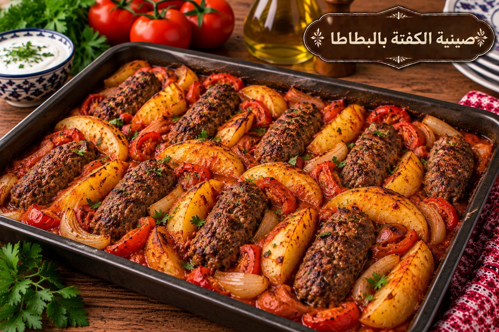

صينية الكفتة بالبطاطا
كفتة وبطاطا بصلصة الطماطم

مقادير صينية الكفتة بالبطاطا
- 700 غ لحم مفروم
- 1 بصلة صغيرة مبشورة
- ½ كوب بقدونس
- 4 بطاطا شرائح
- 2 طماطم شرائح
- 2 كوب عصير طماطم
- 1½ ملعقة صغيرة ملح
- 1 ملعقة صغيرة بهار مشكل
- ½ ملعقة صغيرة فلفل أسود
- 2 ملعقة كبيرة زيت
طريقة عمل صينية الكفتة بالبطاطا
- اخلطي اللحم بالبصل والبقدونس ونصف الملح والبهار والفلفل وشكليه في الصينية.
- رتبي شرائح البطاطا والطماطم فوق الكفتة وادهنيها بالزيت.
- اخلطي عصير الطماطم ببقية الملح واسكبيه حول المكونات.
- غطي الصينية واخبزيها على 200°م 35 دقيقة ثم اكشفيها 15 دقيقة حتى تتحمر وتنضج البطاطا.